Organic Clean Gel
สะอาดและปลอดภัยต่อการสัมผัส ผลิตจากธรรมชาติ 100%
ลดสารเคมี
เป็นมิตรต่อผิวและสิ่งแวดล้อม
ความตระหนักถึงคุณสมบัติของเปลือกส้มในการต้านเชื้อโรคและแบคทีเรีย และต้องการลดการใช้สารเคมีอันตรายในเจลล้างมือสำเร็จรูป โครงงานนี้จึงเกิดขึ้นเพื่อนำของเหลือทิ้งอย่างเปลือกส้มมาแปรรูปเป็นผลิตภัณฑ์ที่มีประโยชน์
การนำทรัพยากรมาใช้ให้คุ้มค่า เปลือกส้มเป็นผลพลอยได้จากอุตสาหกรรมอาหารที่มักถูกทิ้ง การนำมาใช้จะช่วยลดปริมาณขยะและเพิ่มมูลค่าให้กับของเหลือทิ้ง
❝ เพิ่มมูลค่าให้กับเปลือกส้ม สร้างผลิตภัณฑ์ทำความสะอาดมือที่ปลอดภัย เป็นมิตรต่อสิ่งแวดล้อม และส่งเสริมเศรษฐกิจหมุนเวียน ❞
ผลิตเจลล้างมือที่สามารถฆ่าเชื้อโรคและลดความเสี่ยงจากโรคต่างๆ โดยใช้สารสกัดจากเปลือกส้มที่มีฤทธิ์ต้านแบคทีเรียตามธรรมชาติ
ใช้เปลือกส้มซึ่งเป็นทรัพยากรธรรมชาติที่หาได้ง่ายมาแปรรูป ทำให้ลดการพึ่งพาสารเคมีและลดปริมาณขยะในอุตสาหกรรมอาหาร
นำของเหลือทิ้งมาสร้างมูลค่าเพิ่ม เปลี่ยนขยะให้เป็นผลิตภัณฑ์ที่มีประโยชน์ ลดต้นทุนการผลิตและเป็นมิตรกับโลก
ผลิตภัณฑ์จากธรรมชาติที่ปลอดภัยต่อผิวหนัง ลดการระคายเคือง เหมาะสำหรับทุกเพศทุกวัย
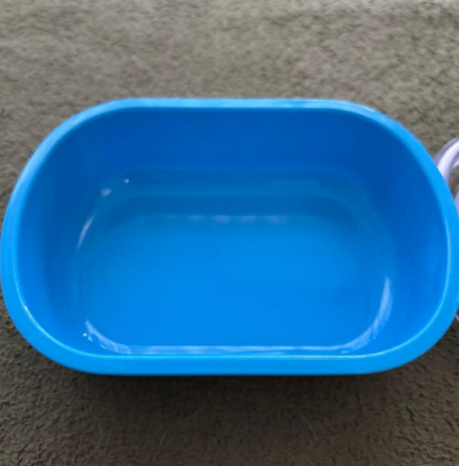
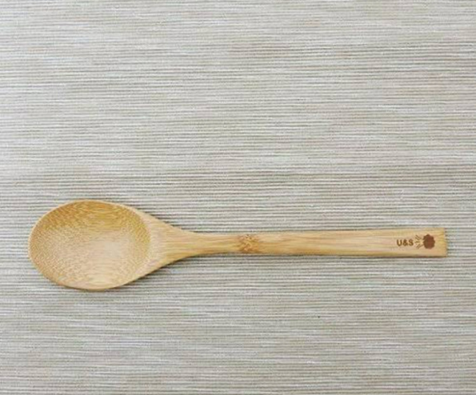
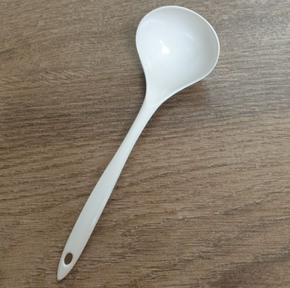
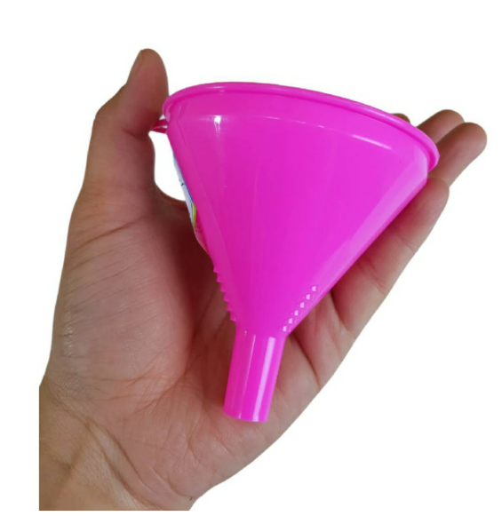
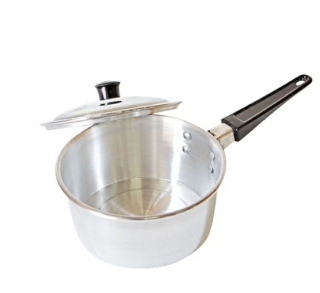
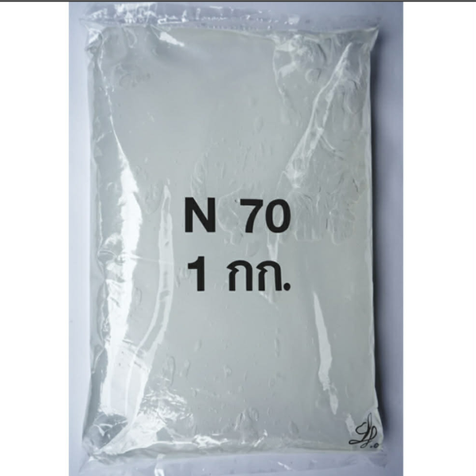
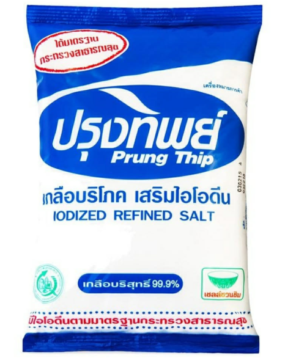
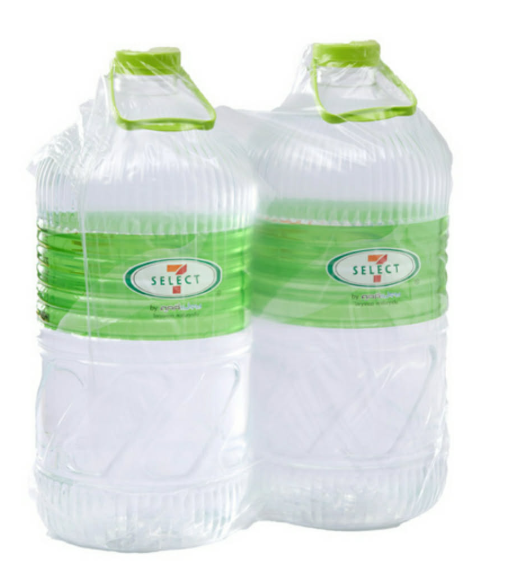
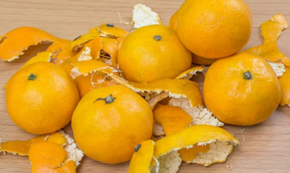
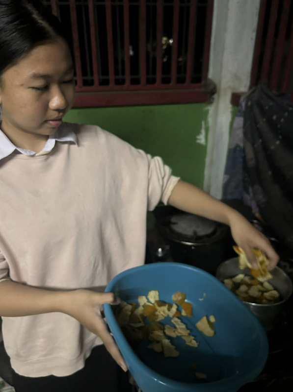
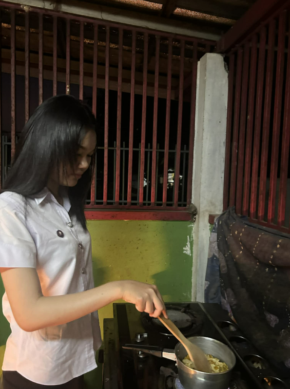
นำเปลือกส้มไปต้มในน้ำเดือดเป็นเวลา 30 นาที พักทิ้งไว้ให้เย็น แล้วนำมากรอง
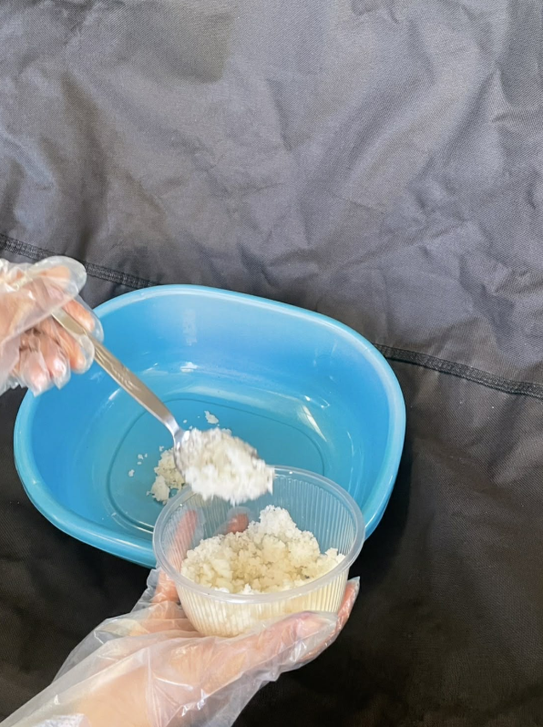
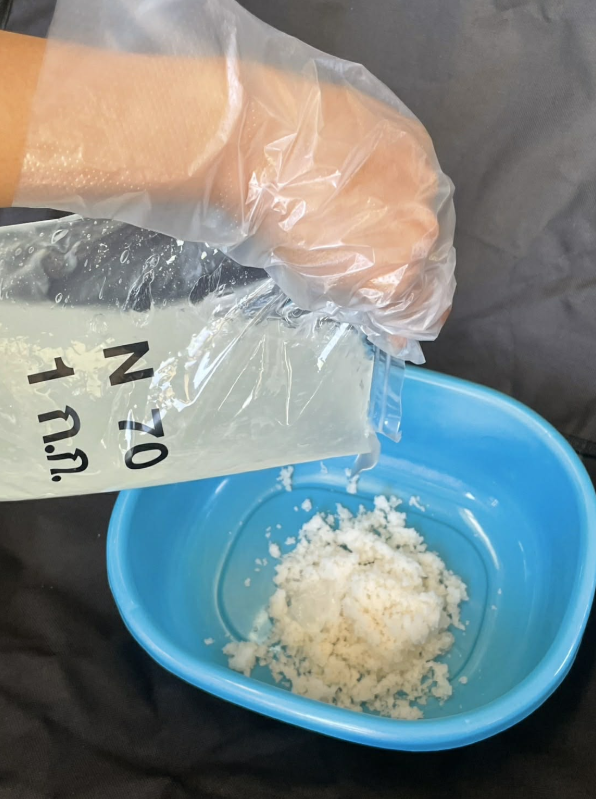
นำเกลือ 200 กรัม ใส่ในกะละมัง ตามด้วย N70 300 กรัม คนให้เป็นเนื้อเดียวกัน
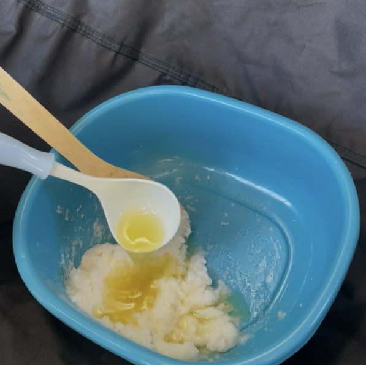
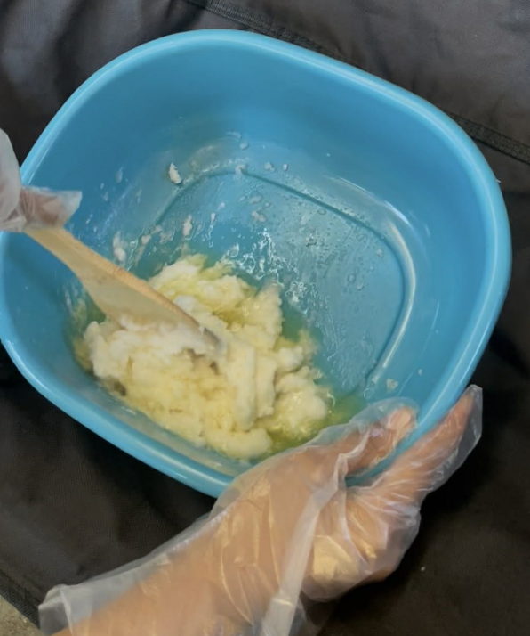
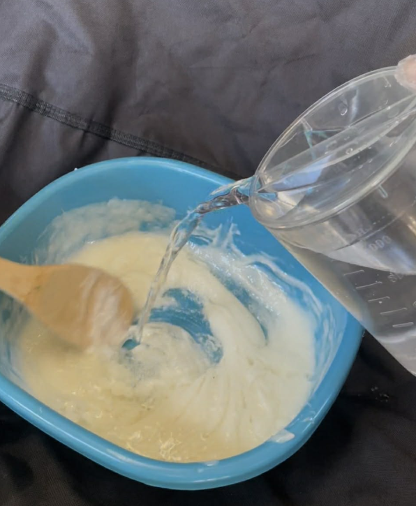
นำน้ำจากเปลือกส้มมาใส่ 3 กระบวย แล้วเติมทีละนิด ตามด้วยน้ำเปล่า 1,000 มิลลิลิตร
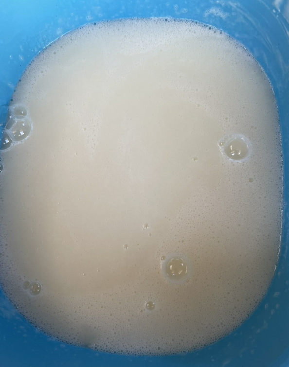
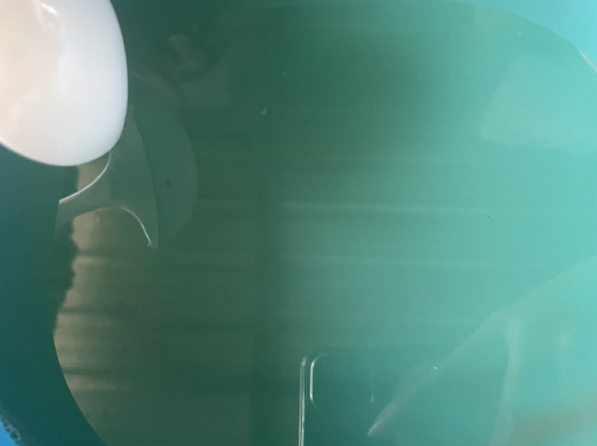
คนส่วนผสมให้เข้ากัน พักทิ้งไว้ 1 คืน รอจนใส แล้วนำบรรจุภัณฑ์ใส่ภาชนะ
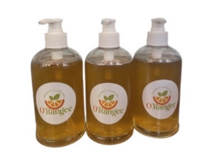
เปลือกส้มมีคุณสมบัติต้านเชื้อแบคทีเรียที่สามารถช่วยลดจำนวนแบคทีเรียบนมือได้
เปลือกส้มมีวิตามินซีและสารต้านอนุมูลอิสระที่ช่วยบำรุงผิวและทำให้ผิวหนังนุ่มนวล
เจลล้างมือจากเปลือกส้มมักจะไม่มีสารเคมีที่เป็นอันตราย เช่น แอลกอฮอล์ หรือสารกันเสีย ทำให้ปลอดภัยต่อการใช้บนผิวหนัง
🏫 สาขาคอมพิวเตอร์ธุรกิจ
วิทยาลัยเทคนิคกาญจนาภิเษกอุดรธานี